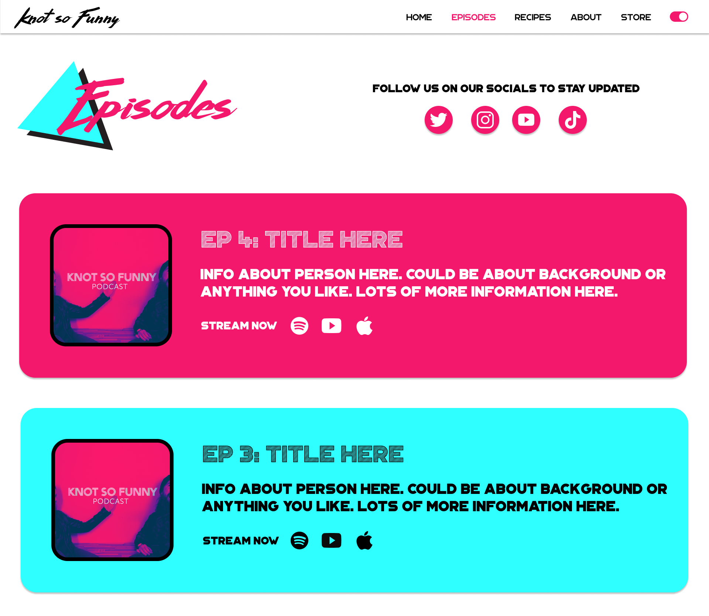
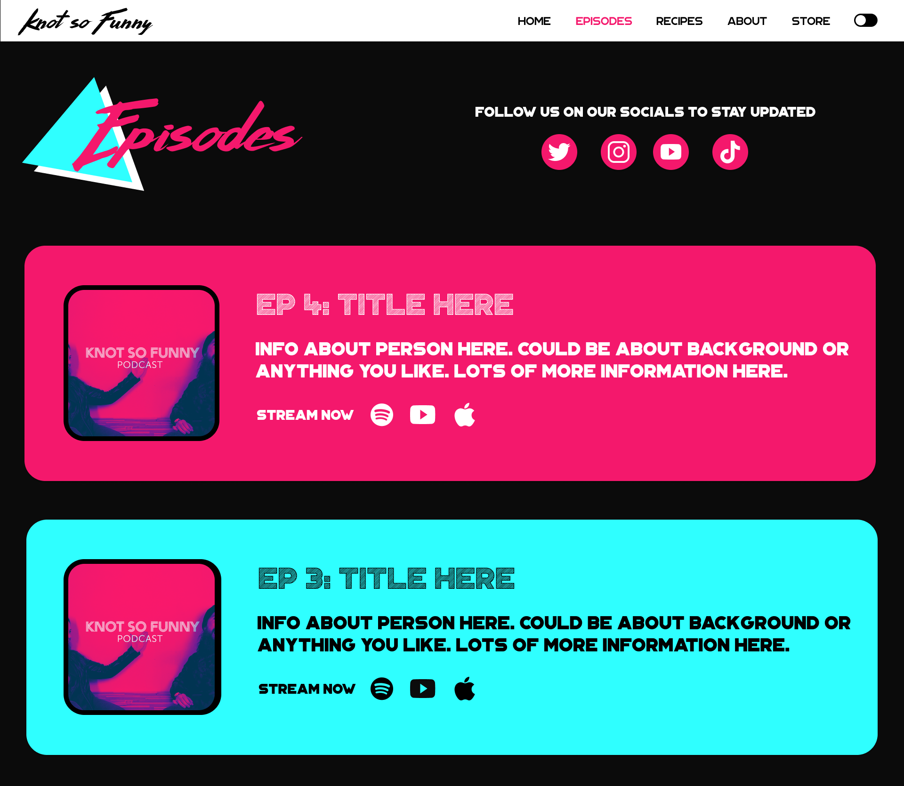

Knot So Funny
Overview
Designed and created a website for the podcast, Knot So Funny. Knot So Funny is a comedy podcast where guests are interviewed and massaged by Chris, along while Amy cooks delicious, nutritious meals.
I know. It sounds like my kind of podcast!
The goal of this project was to create a sleek, functional website so users could easily get to know more about the podcast and navigate through episodes.
The design of the website was inspired by Saved by the Bell and other 90s classics.
The Process
After briefing with the clients about their vision, I knew right away I wanted to use bright neon colors with funky, retro typefaces.
The website would include pages for users to listen to episodes, read about the cast, look at Amy's recipes, and shop for merch.


Chris and Amy also asked for a light mode and dark mode.
A challenge for this project was creating a retro looking website while also making it "sleek."
My solution was to use small 90s elements throughout the website. Since there were a lot of points to include, a little went a long way with this project.
In the end, the clients and I were very happy with how it came out!
Click
here to visit the final website.